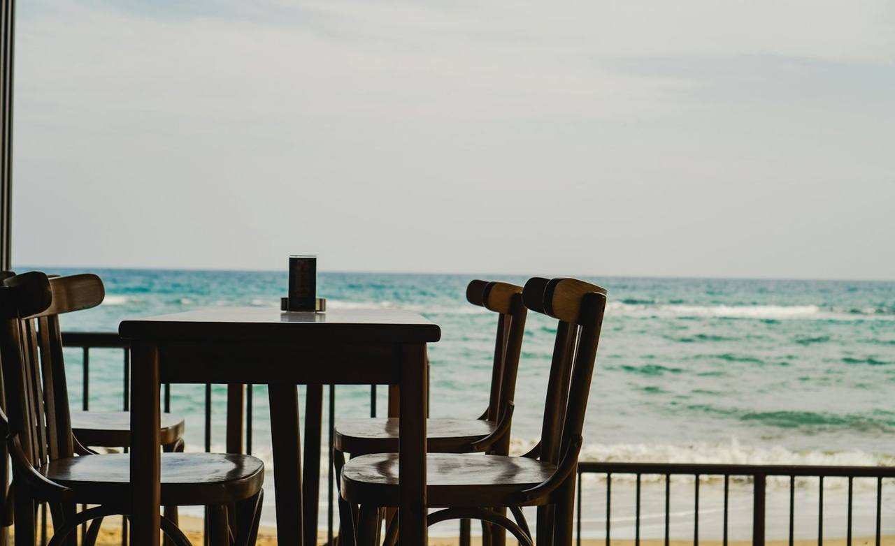
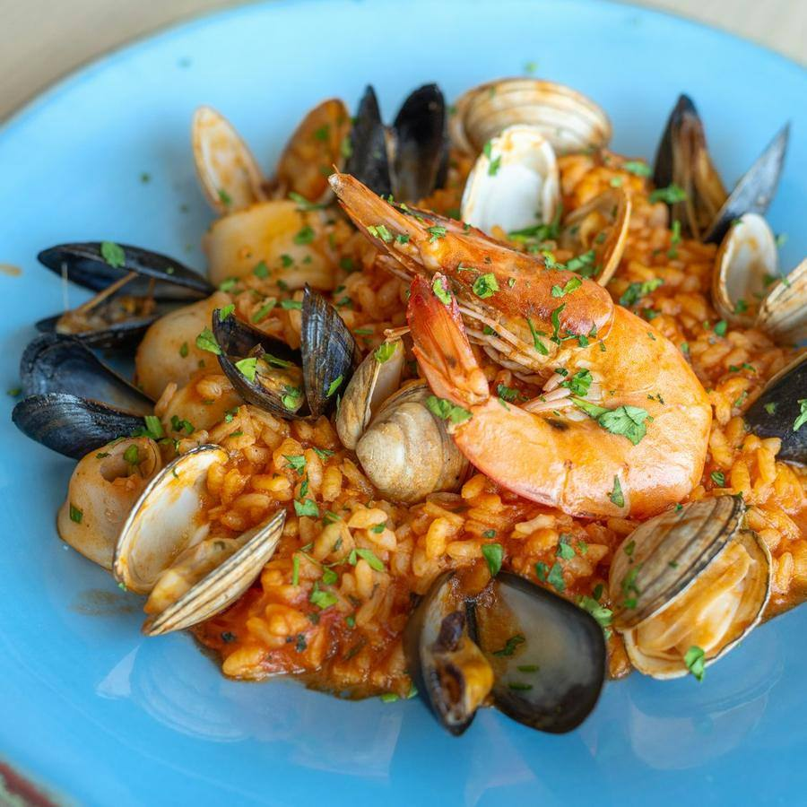
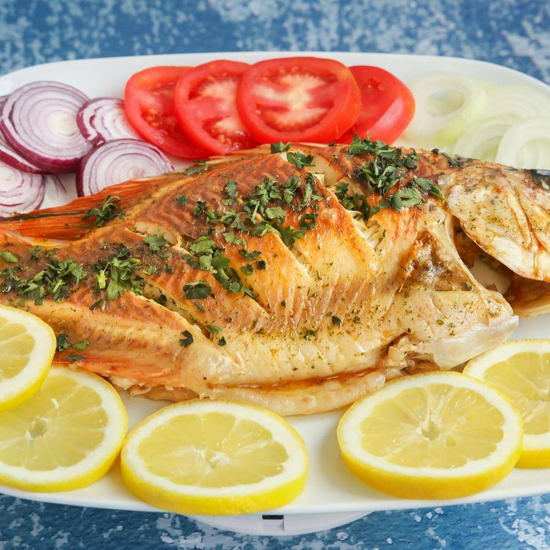
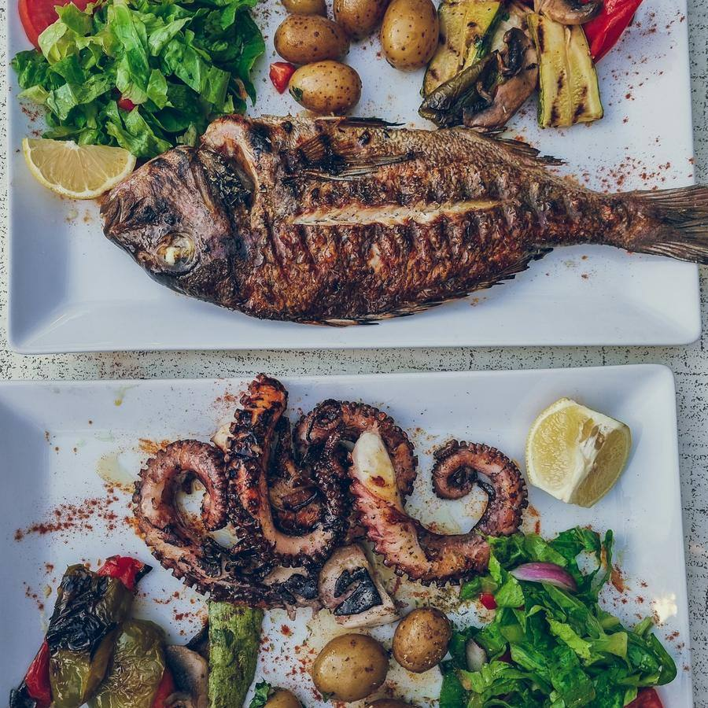

Arroces y cocina de mar · Playa de San Juan, Alicante
Arroces a leña frente al mar
Pescado de la lonja cada mañana, arroces a leña como en casa de la abuela y una terraza con los pies casi en la arena. Reserva tu mesa y elige el arroz con antelación.
Por qué Taberna La Marea
Lo que nos diferencia
Terraza frente al mar
Mesas en primera línea, con sombra y brisa de tarde.
Arroz a leña
En paella de hierro y fuego de naranjo, como siempre.
Lonja cada mañana
Pescado y marisco de Santa Pola y Altea, del día.
Trato de casa
Tres generaciones de la misma familia en la sala y la cocina.
Arroces y cocina de mar
La carta
Arroces por persona, mínimo dos raciones. El pescado del día, según lonja.
Arroces

Arroz a banda
17 €/p.Con fumet de roca y alioli de la casa.
favoritoArroz negro
18 €/p.Con sepia y su tinta.
Arroz de bogavante
28 €/p.Meloso, con bogavante entero.
Fideuà
17 €/p.Con gamba y alioli.
Del mar
Gamba roja de Santa Pola
24 €A la plancha, con sal gorda.
favorito
Dorada a la sal
32 €Para dos.

Pulpo a la brasa
19 €Con patata y pimentón.
Pescado del día
S/MSegún lonja.
Para empezar
Ensalada de tomate
12 €Tomate de la huerta, ventresca y cebolla.
Calamar a la andaluza
15 €Del día, frito al momento.
Clóchinas
13 €Al vapor, en temporada.
nuevo
Mediodía
Menú del día
15,90 €De martes a viernes: entrante, arroz o pescado y postre.
favoritoMenú de fin de semana
32 €Para compartir, con arroz a elegir.
Galería
Pásate a verlo
Fotos del local y de lo que hacemos. Pulsa para verlas en grande.
Reseñas
Lo que dicen de nosotros
Reseñas de ejemplo: en tu web van las tuyas, enlazadas a tu ficha de Google.
- Carmen B.hace 3 días5 de 5
El arroz a banda, de los mejores de Alicante. Y la terraza, una maravilla.
- Iván T.hace 1 semana5 de 5
Reservamos con el arroz encargado y salió a la hora exacta. Socarrat perfecto.
- Mercedes L.hace 2 semanas4 de 5
Muy rico todo. En agosto conviene reservar con días.
- Óscar F.hace 1 mes5 de 5
La gamba roja, espectacular. El servicio, de familia.
- Anna K.hace 3 semanas5 de 5
Best paella of our trip, right by the beach. Lovely family.
Reservar mesa
Tu mesa en tres pasos
- 1
Elige día y hora
Comidas y cenas.
- 2
Dinos cuántos sois
Y si queréis terraza.
- 3
Encarga el arroz
Así lo tienes listo al llegar.
Visítanos
Dónde estamos
Horario
| Lunes | Cerrado |
|---|---|
| Martes | 13:00 – 16:00 y 20:00 – 23:30 |
| Miércoles | 13:00 – 16:00 y 20:00 – 23:30 |
| Jueves | 13:00 – 16:00 y 20:00 – 23:30 |
| Viernes | 13:00 – 16:00 y 20:00 – 23:30 |
| Sábado | 13:00 – 16:00 y 20:00 – 23:30 |
| Domingo | 13:00 – 16:30 |
Cómo llegar
- En el paseo de la playa de San Juan
- Tranvía L3 y L4, parada Costa Blanca
- Aparcamiento público a 200 metros
Contacto
¿Hay que reservar?
En verano y fines de semana, sí. El resto del año, mejor también.
¿Puedo encargar el arroz?
Sí, al reservar. Así está listo cuando llegáis.
¿Tenéis opciones sin gluten?
Casi todos los arroces y el pescado a la plancha. Dínoslo al reservar.
¿Admitís perros en la terraza?
Sí, en la terraza son bienvenidos.
Te esperamos en Playa de San Juan
Pescado de la lonja cada mañana, arroces a leña como en casa de la abuela y una terraza con los pies casi en la arena.
Reservar mesa¿Quieres una web así para tu negocio?
Taberna La Marea es un negocio inventado: esta página es una plantilla de ejemplo. La adapto a tu negocio con tus fotos, tus precios, tus reseñas y tu forma de reservar. Pruébala tal cual: la reserva funciona, pero no envía nada a nadie.
- Carta o servicios por categorías, galería y reseñas
- Reserva o cita en pocos pasos, con aviso por WhatsApp
- Lista para el móvil, rápida y sin cookies de terceros
- Aviso legal, privacidad y cookies incluidos